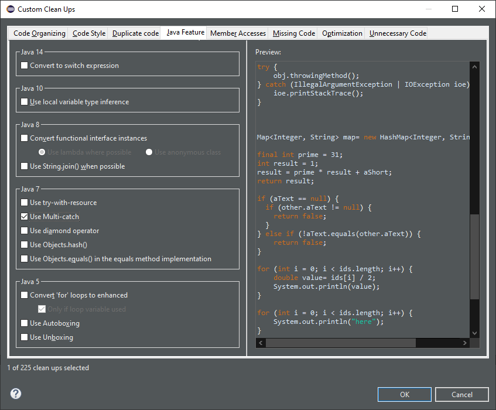

JUnit
Java Editor
The feature is enabled only with Java 7 or higher.
To apply the clean up, invoke Source > Clean Up..., use a custom profile, and on the Configure... dialog, select Use Multi-catch check box on the Java Feature tab.

For the given code:

One gets:

Java Views and Dialogs
Java Compiler
Java Formatter
Debug